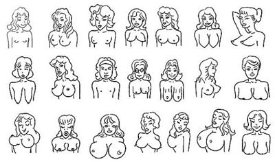

“关于胸部，婴儿看到的是食物，男人看到的是性爱，医生看到的是疾病，商人看到的是金钱，我们却看到女人在起起伏伏中挣扎。”——Marilyn Yalom《乳房的历史》
慧子/文  1920s：平胸是王道“爵士乐时代”的姑娘们不崇尚发达丰腴的胸部，理想的倩影是前胸较平的“飞机场”。探究社会原因，这与当时妇女争取与男性平等的就业权利、在社会地位充分向男性靠拢分不开。
1930s：纤美占主流，凸胸初抬头为了捍卫得来不易的劳动权利，平胸潮流仍在继续，却越来越显出颓势。爱美之心岂能为紧窄的胸罩压抑？更禁不起挑逗。比如以简•哈洛为首的性感女星，钻进肌肤毕现的贴身衣裙，丰盈起伏的胸形大方淫靡地显耀于众。30年代，大胆的霹雳娇娃们已经开始积极的“扩胸运动”了。
1940s：大胸终成时尚大胸为美的根源是二战期间的哺乳需求，然而真正作为一项审美标准显露出强大的指导意义，却是在40年代。战后娱乐界的繁荣，女性进军电影业的步伐大大加速了大胸风潮的到来。
1950s：尖锥新风潮珍蒙思碧菲、索菲亚•罗兰、碧姬•芭杜……50年代的熠熠红星，哪一个不是令男人垂涎的美胸尤物？不过时尚先锋玛丽莲•梦露开拓了尖突胸形的新风潮，她那满世间可见的高耸锥形胸脯得益于紧身内衣的托衬，迅速掠走看客们的视线，引来效颦东施无数。
1960s：波霸当道延续30年的大胸风潮在20世纪60年代走到尽头，西方妇女解放运动如火如荼地展开，公开焚烧胸罩以示解除束缚的事件时有耳闻，女人们都模仿起英国职业模特崔姬，以不戴胸罩为时髦。
1970s：阴阳合一中性风可不可以大胆假设，胸部审美50年一个轮回？毕竟，20世纪70年代的状况像极了20年代的翻版：经济大萧条过后，大批女性加入上班族并在男性世界里获得成功，更多的人将这归功于向男性身体特征的靠拢。借鉴半世纪之前的经验，此时期盛行不分男女的中性风，大胸美女不再受人瞩目。只能说，如果春哥生在20世纪70年代，一样会红，比之今天甚至有过之而无不及。
1980s：积极“凸胸运动”女性追求美胸、积极“凸胸”的“又一春”在80年代悄然到来。巩固了社会地位，在经济上勉强与男人分庭抗礼的女人们为了保持对男性的吸引力，重新强调起自己的女性特征。这一时期，丰满圆凸才称得上美胸，“苹果型”是女性的理想，“梨型”则显得健康诱人。苏菲•玛索们从玉女转型为“欲女”，挺拔壮阔的胸部靠着低胸衣若隐若现。
1990s：由大胸王道到适度丰满、健康美胸麦当娜的锥形胸衣最终被视为“个案”，90年代的女性显然更热衷于各种丰胸美乳之术。平胸美女们的信心被击退到科罗拉多峡谷，掉入了马里亚纳海沟，拼命“整”救的胸部时候惊闻乳腺病、乳腺癌患者的数字直线飙升，这才悟出：完美的乳房以健康为标准，只有大小适度、均匀自然、浑圆挺拔的乳房才具有吸引力。
那么下个10年，胸部审美将何去何从？健康美胸不可抛弃，束胸丰胸却是个问题。20世纪女性胸线波澜起伏一百年，个中玄机其实很容易看穿：由平胸到凸胸，由对高凸胸型的向往到对波霸的疯狂嫉妒，然后忽然风向一转，尖突风潮是小胸盛行、新一轮低胸主义到来的前兆。假定这样的轮回圈成立，那么90年代的大胸主义历经新世纪第一个十年的洗礼，已然是强弩之末。2010年，大胸过后是什么？且不去争辩尖锥形胸部究竟是复古到了半世纪之前梦露时代，还是一种前卫新时尚，我们关心更多的只是一个结论：
下个十年，锥胸当道！